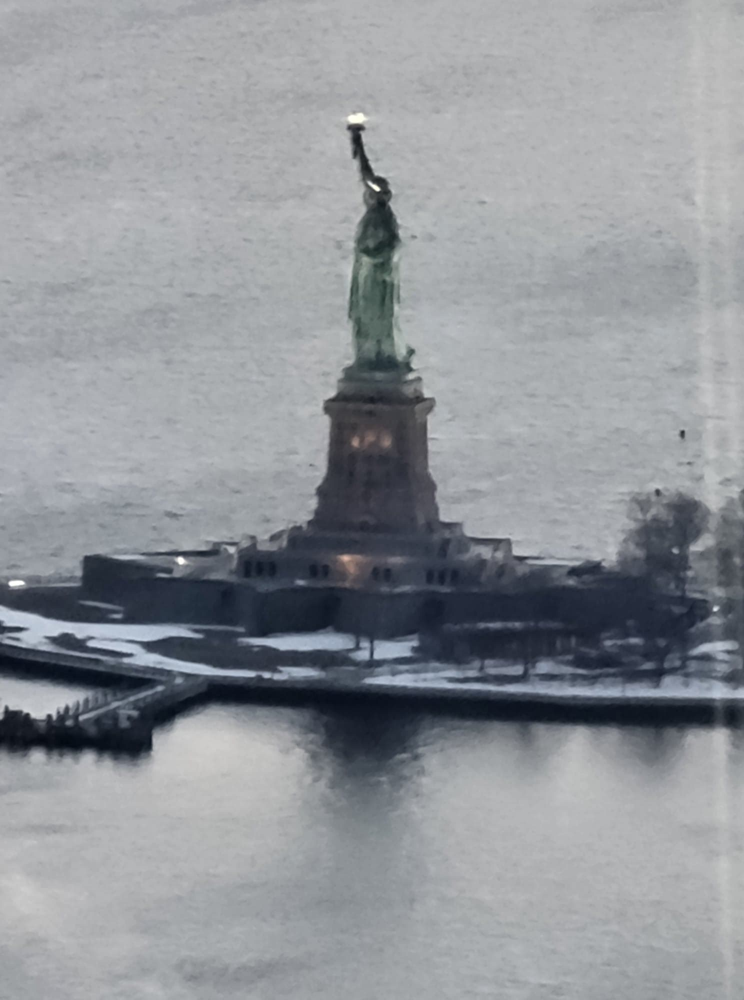
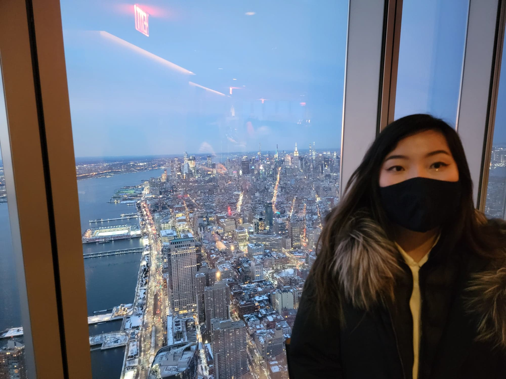
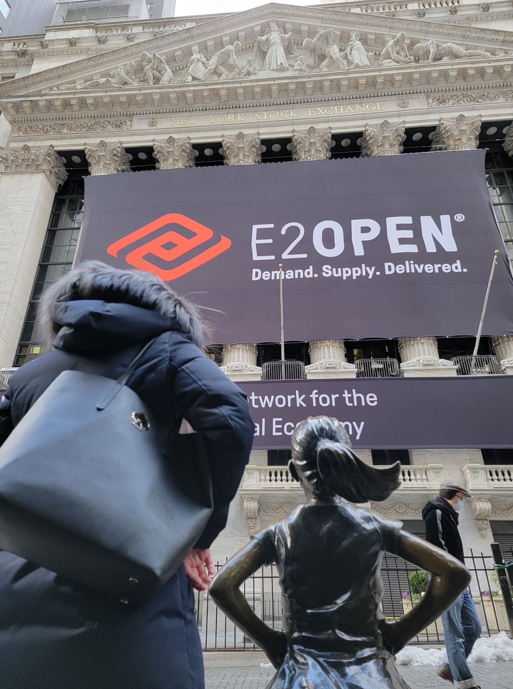
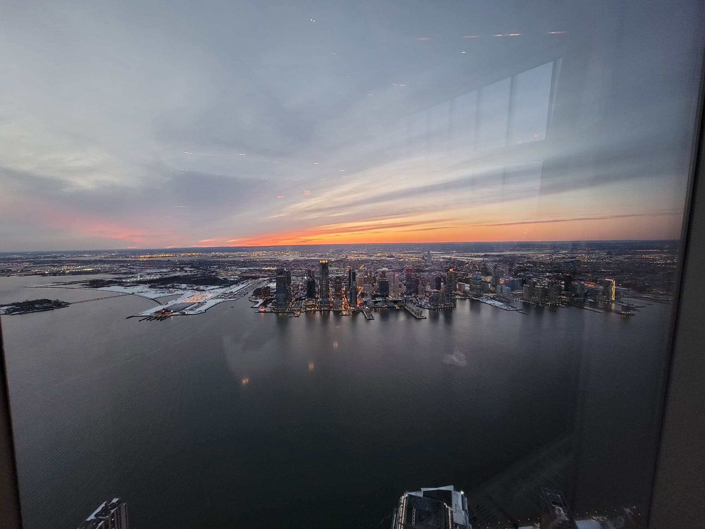
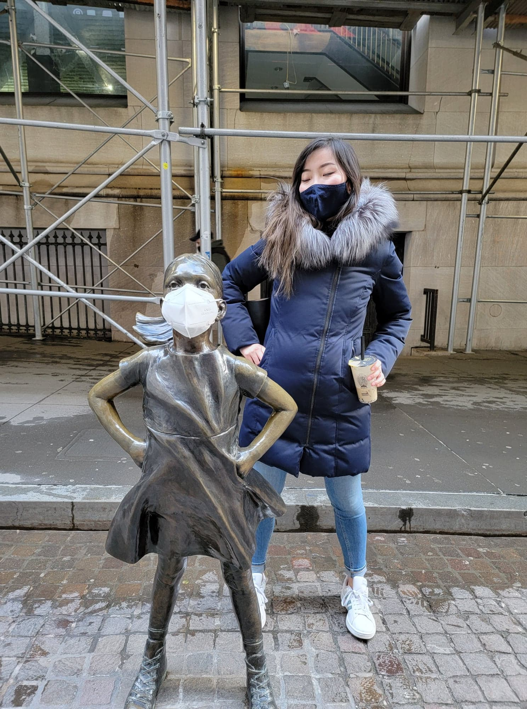
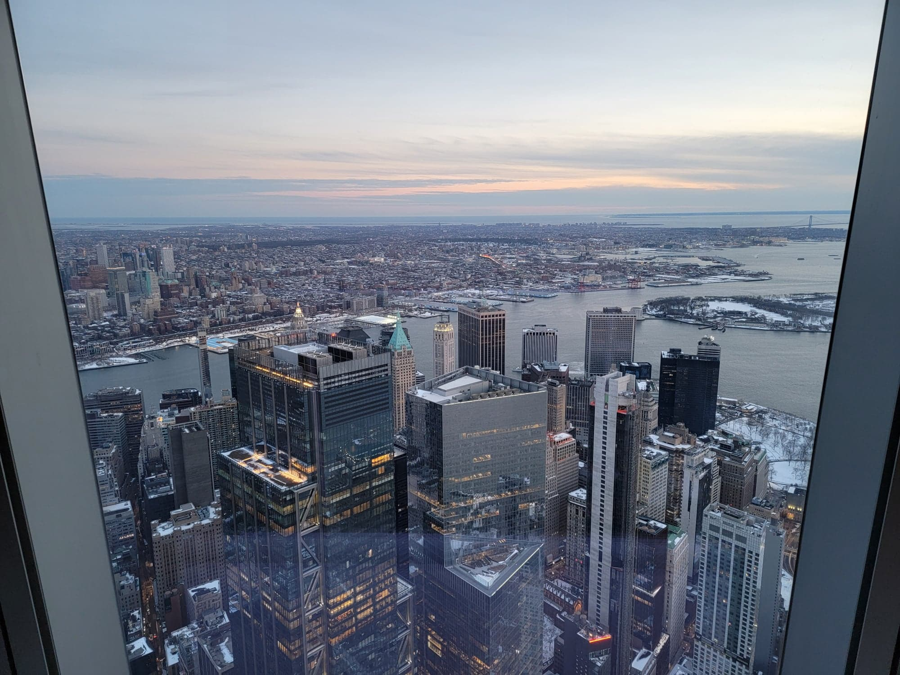
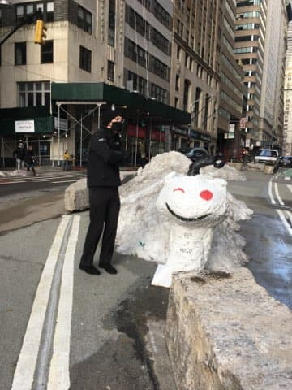
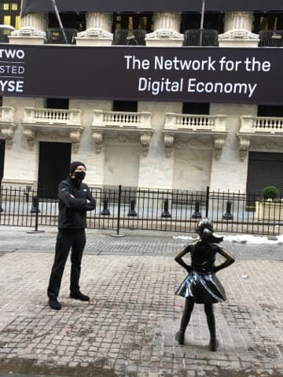

Here's the weekly catch up!
I spent bulk of the day working on IdP stuff. I just about completed client_id support, but at the end, I was blocked by the solid-client-authn team. They'll need to complete client_id support before I can continue implementing it in the IdP.
The rest of the day was spent finishing up the doc describing the next-gen data browser. I made some decent progress on Wednesday designing wireframes and writing about the user experience. I finished up the "Architecture" and "User Stories" sections. In total, it almost doubled the size of the document to 43 pages, but I think it was thorough.
I alerted Marcus and Titus of the changes and crafted an email for Ann that summarized the document in a size appropriate for an email (but attached the document as optional reading)
Overall, I'm proud of the work that went into creating the document, and it definitely fleshes out the ideas I have over the data browser experience.
With the document complete and IdP work blocked. I found myself in the rare position of having completed everything that was immediately required of me. So, I seized the opportunity to continue writing "Star Jump."
I haven't written a chapter all year. The last one I wrote was Chapter 9, and that was written as a distraction from Chapter 8. I had writer's block on the main storyline, so I decided to skip to Chapter 9 which was off the main storyline. But, it was time to once again tackle the main story.
I completed six pages of the chapter (about half), but didn't delve into any of the portions that were giving me writers block. I needed to figure out what a certain Mcguffin was before continuing.
Saturday was an eventful day! We explored Midtown Manhattan last weekend, so we decided to explore downtown Manhattan this weekend. We walked past city hall and the NYSE to Battery Park, before heading up to the 9/11 memorial and finishing the day at One World Observatory!
       Overall, I'm enjoying my time in Manhattan. Travelling around with Ailin is making me happier than I've ever been.
When we got home, Marcus had read the updated document and had a lot of questions. Some of them required some thought on my part, and the entire conversation gave me an even better idea of how this company will go. It feels like Marcus is more interested given the long conversation we had about exactly what he'd do.
We discussed various funding routes and I know that at least I'll need 500k and 2 developers - one front end (Titus) one backend (Marcus) - and one experienced designer (unsure who that is yet, but Priscilla could help find one). That should allow the company to last at least a year. Though, I would definitely be looking to raise another round before that runs out.
I didn't do much on Sunday. I did a little bit of thinking about my writer's block and wrote a few more paragraphs, but mostly reseted and watched videos about Mass Timber Construction. It was interesting stuff. I think mass timber is the future of construction, but ultimitely it was unproductive.
I was getting a bit concerned by Monday. Neither Ann nor Olivia had responeded to organize a next steps meeting for funding. But, I eventually decided that I can't do anything about people's response time other than prompt again. So, I spent the day finishing the chapter.
I'm quite proud of the product. It's a more depressing chapter where Celia is decaying in health while the group is stuck in ruins. Ailin was the first to review the chapter, giving some helpful feedback on grammar.
Ann and Olivia both responded. Ann just missed the email and is excited to set up a meeting. Olivia said Tim needs more time to consider the decision, and hopefully we can get a time arranged this week. I'm a bit afraid of what's happening behind the scenes. I have a feeling that the document caused Tim to investigate Inrupt's pilots to find that they were, in fact, centralized implementations of Solid. I don't know how that's going to play out, but all I can do right now is wait for the outcome and prepare to build a company. Or I could just be reading into it too much, and it just takes a long time to evaluate these things.
For the rest of the day, I'll probably do a few polish passes at the IdP. I'm still blocked as client_id implementation isn't in this sprint for the client-authn team. It feels weird to run out of things to do. After these polishing passes, I could go write another chapter of "Star Jump." The next one is a pretty fun Anyo chapter. I could also start looking for the senior designer that I need, but part of me feels like it's too early to do that given I don't have funding. I felt fine reaching out to friends, but searching for strangers to bring onboard pre-funding is another level. I'll have to see.